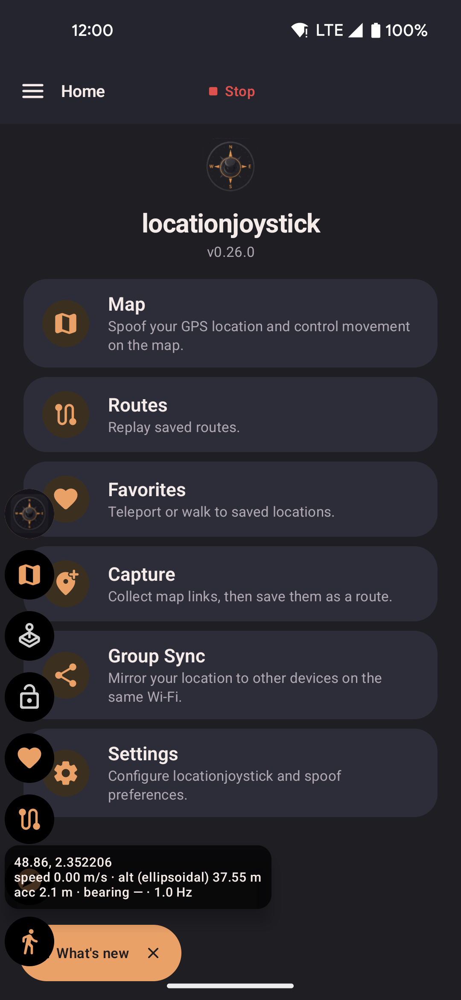

Settings
Set movement speeds, make the fake GPS signal look more real, choose which controls appear in the widget, set roaming defaults, and back up your data. The settings hub has four sections: Movement & GPS, Menus, Favorites & Routes, and Roaming. Export, import, and reset are in the menu at the top right.
Movement & GPS · Anti-cheat warning · Menus · Favorites & Routes · Roaming · External services · QR transfer · Export / import

- Movement & GPS: edit the five speeds and turn each GPS realism option on or off.
- Menus: choose which features appear in the floating widget and on the map, and drag to reorder them.
- Favorites & Routes: add ready-made locations and routes.
- Roaming: set defaults for Walk around the block and Planting.
Movement & GPS
Speed profiles
Five speeds control the joystick, routes, and roaming. Edit any of them. The change applies right away, even during a route or roam. The km/h ↔ mph switch at the top changes every speed in the app.
| Profile | Default | Pace |
|---|---|---|
| Slow Walk | 1.1 km/h | Strolling |
| Walk | 2.0 km/h | Regular walking pace |
| Run | 8.0 km/h | Jogging. Follows footpaths when Follow roads is on. |
| Bike | 15.0 km/h | Cycling. Follows bike lanes when Follow roads is on. |
| Drive | 54.0 km/h | Driving. Above the anti-cheat limit below. |
There is no upper limit. The lowest allowed speed is 0.04 km/h. Lower values are raised to it, because a speed of zero means the device never moves.
Each speed has a checkbox. It sets whether the widget's Speed cycle button includes that speed. Walk, Run, and Bike are on by default. Slow Walk and Drive are off. You can edit all five speeds either way.
Anti-cheat warning
If you set a speed above 28.8 km/h (17.9 mph), this warning appears below the field:
"Speed exceeds 8 m/s, may trigger anti-cheat in some games"
The warning is informational. Nothing is blocked or changed. Each speed is checked on its own. Lower the speed to clear the warning, or ignore it.
Location randomness
Adds small random changes to each location update, like the drift of a real GPS chip. Set a value to 0 to turn that change off. The app sends one update every second. Wobble and altitude values show in feet when you pick mph.
| Option | Default | What it does |
|---|---|---|
| Wobble when still | 0.8 m | The largest random shift while you stand still. Maximum 50 m. |
| Wobble while moving | 0.3 m | The largest random shift while you move. Keep it below the still value to avoid odd jumps. Maximum 50 m. |
| Max step per tick | 1 m | How far the shift can change in one update. Higher values drift faster. Lower values wobble slowly. Allowed range: 0.1 to 5 m. |
| Speed wobble when still | 5% | A random percentage added to or taken from the reported speed at rest. 0 looks perfectly still. |
| Speed wobble while moving | 5% | A random percentage added to or taken from the reported speed while you move. The speed then never looks flat. Allowed range: 0 to 50%. |
| Idle wobble frequency | 15% | How often the speed shows a tiny wobble at rest. 0 means never. 100 means on every update. |
| Vary altitude (m) | 1.5 m | How much the reported height moves up and down. Larger values look bumpier. 0 gives a flat height. Shows only while "Vary altitude" below is on. |
GPS realism
Each option makes the fake signal look more like a real GPS chip. Some apps check these details to spot fake locations. Turning on more options lowers the chance of detection.
| Option | Default | What it does |
|---|---|---|
| Hold bearing when stationary | On | Keeps your last direction when you stop, instead of snapping back to north. A sudden reset to north is a common giveaway. |
| Vary altitude | On | Moves the reported altitude slightly instead of holding one height. "Altitude variation" above sets how much. |
| Use real-world elevation | On | Looks up the real ground height at your fake location every minute, instead of a fixed 35 m. The height changes gradually. Needs an internet connection. If the lookup fails, the app uses the fixed height. It pauses while an altitude override is active. "Reset elevation override" clears the override. |
| Show altitude override button | Off | Adds a widget button to type in a fixed height. It replaces the default and the real-world height until you reset it. The switch is in Menus → Privacy. |
| GPS warm-up simulation | Off | Starts each session with low accuracy that improves over about 30 seconds, like a phone finding its first GPS fix. |
| Realistic satellite count | On | Reports 7 to 14 visible satellites, and 6 to 12 in use. Some apps flag zero satellites. |
| Simulate signal dropouts | Off | Every 10 seconds or so, the signal freezes for about 2 seconds, like a real GPS losing signal. Most apps show visible freezes, so leave it off unless you need it. It does not run during route playback or walk-to. |
Location memory
Remember last location restores your last fake position when you reopen the app. The app saves it on your device after every update. If nothing is saved, the app starts from your real location, whether this option is on or off. On by default.
Menus
Appearance
The Light mode switch changes the app from the dark theme to a bright theme. The bright theme is easier to read in sunlight. It applies in the app and in the widget lists. The round buttons over other apps stay dark either way.
Map source
The Map source switch sets where map images come from. It applies to the map screen, the floating map, the favorites picker, and the route creator. OpenStreetMap is the default. Amap (高德) is faster and more detailed in mainland China, where OpenStreetMap is often slow or blocked.
Amap uses a map system that is shifted a few hundred meters from real GPS. The app corrects this, so markers, routes, and taps land on the right spot. Everything you save, share, or use as your fake location stays in standard GPS coordinates. Switching sources never moves your data. A small credit in the map corner shows the active source.
App Features
Choose which quick-access features appear in the floating widget and on the map screen. Each feature has one checkbox for the widget and one for the map. Drag the handle on the left to reorder. Both use the same order. See Overlays for what each control does.
| Feature | Icon | Description |
|---|---|---|
| Map shortcut | 🗺️ | Widget only. A small map over your current app. |
| Show/hide joystick | 🕹️ | Widget only. Shows or hides the joystick. Its icon is orange when visible and grey when hidden, including during a route or roam. |
| Lock joystick | 🔒 | Widget only. Shows the joystick if hidden and keeps its direction after you let go. Tap again to unlock. The icon stays orange when locked and grey when unlocked, during both playback and pause. |
| Favorites | ❤️ | Widget and map. Your favorites, with teleport and walk. |
| Routes | 🗺 | Widget and map. Your routes. |
| Roaming | 🧭 | Widget and map. Walk around the block and Planting. On by default. |
| Search | 🔍 | Map only. Search for a place by name. |
| Paste coordinates | 📋 | Map and widget. Paste coordinates. Off by default. See Map. |
| Capture coordinates | 📍+ | Opens from Home or the side menu. Collects map links into a list. Off until you turn it on. See Location Links. |
| Speed cycle | ⚡ | Widget only. One tap switches to the next enabled speed. |
Starting and stopping location simulation is always available from the bar at the top of every screen, so it isn't one of the configurable features above.
Speed cycle
Choose which speeds the widget's Speed cycle button goes through. See Speed profiles.
Tap to Walk
Turns on the crosshair overlay and sets its map scale and compass. See Tap to Walk for every option.
Privacy
Options that hide app features or shorten the steps to move.
Hide teleport features
One switch that removes every "jump to a location" option: on the map, in favorites, when starting a route (including Teleport between waypoints), in Group Sync, in the paste box, and in the widget. Routes and pasted points then walk to the first stop instead of jumping. Use it if you only want to move by walking. Off by default.
Hide floating widget
Keeps the floating widget button off the screen while spoofing is on. Your other overlays keep working. Off by default.
Hide notification icon
Removes the "Mock location active" icon from the status bar. Android requires the notification, so it stays in the notification shade. Off by default.
Show route jump buttons
Adds "Previous stop" and "Next stop" buttons while a route plays. Use them to skip the walk between stops. Off by default. Hidden when Hide teleport features is on.
Floating map quick walk
A tap on the floating map walks there at once, with no popup. Off by default. See Tap to Walk.
Show altitude override button
Adds a widget button to type in a fixed height. Off by default. See GPS realism.
Capture
The same Capture switch, List and Jump checkboxes, and browser choice as the Location Links page. You can turn Capture on or off without leaving Settings. Setting this app as your default browser is a one-time step on the Location Links page. Shared links and "navigate" buttons in map apps always work without setup.
Debug stats

Shows your coordinates, speed, altitude, accuracy, heading, and update rate in the expanded widget. Use it to check that spoofing works. Off by default.
Favorites & Routes
Add ready-made locations and routes with one tap.
| Option | Description |
|---|---|
| Show hot locations | Adds well-known city centers, parks, and landmarks to your favorites. Off by default. Turning it off removes only those entries. Your own favorites stay. See Favorites → Hot locations. |
| Show hot routes | Adds ready-made routes for popular event locations to your routes. Off by default. Turning it off removes only those routes. Your own routes stay. See Routes → Hot routes. |
Roaming
Set defaults for Walk around the block and Planting. Only one can run at a time.
| Option | Description |
|---|---|
| Walk around the block — Radius | The farthest distance from the start that random stops can land. Larger values spread the walk out. Default: 500 m. Maximum: 100 km. |
| Walk around the block — Route distance | The total distance to walk. The walk ends when it reaches this distance. Default: 1 km. Allowed range: 50 m to 50 km. |
| Walk around the block — Speed | The speed the walk starts at. The roaming sheet offers Walk, Run, and Bike. Settings also offers Slow Walk and Drive. Default: Walk. Once roaming starts, changing speed in the app or widget overrides it. |
| Follow roads | Walk around the block only. Movement follows real walkable paths instead of straight lines. Uses a straight line if the road service is unavailable. On by default. |
| Return to start | Walk around the block only. After the walk ends, you walk back to the starting position. On by default. |
| Planting — Starting radius | How close to the center the spiral starts. Default: 5 m. |
| Planting — Ending radius | How far out the spiral opens before it tightens again. Default: 39 m. Maximum: 200 m. |
| Planting — Speed | The speed Planting starts at: Walk, Run, or Bike. Default: Bike. This is separate from the Walk around the block speed. Once Planting starts, changing speed in the app or widget overrides it. |
| Planting — Infinite loop | Repeats until you stop. On by default. Turn it off to set a number of loops (1 to 99, default 1). One loop is one full expand and tighten. |
External services
The app works offline and needs no account. It sends no usage data or tracking. Three features use the internet:
| Service | When used | What is sent |
|---|---|---|
| Road routing (OSRM) router.project-osrm.org |
Routes that follow roads, roaming with Follow roads on, and guided route creation. Used only when you choose to follow roads. | The coordinates of your stops or random roaming targets. Nothing that identifies you or your device. |
| Place search (Nominatim) nominatim.openstreetmap.org |
Place search in the route creator and the favorites map picker. Used only when you type a search. | The text you type, such as a place name or address. No coordinates and nothing that identifies you. |
| Map images (OpenStreetMap) tile.openstreetmap.org |
Whenever you move or zoom a map. | Only which part of the map to show. No personal data. |
Each service is used only while its feature is in use. To avoid all of them, skip road following, place search, and the map. You can still enter coordinates directly in Favorites.
QR transfer
Copy your whole setup to another device by scanning a QR code. No cable, account, or cloud is needed.
Export / import
Back up or restore your routes, favorites, speeds, widget setup, location randomness settings, and roaming defaults.
| Action | Description |
|---|---|
| Export via QR code | Shows a QR code. Another device on the same Wi-Fi network scans it to receive your setup. |
| Export settings | Saves a backup file. Keep it or share it. |
| Import from QR code | Scans a QR code shown on another device on the same Wi-Fi network. You choose to add to your data or replace it. |
| Import via code | Type the short code from the sending device instead of scanning. Both devices must be on the same Wi-Fi network. |
| Import from file | Choose a backup file you exported earlier. You choose to add to your data or replace it. |
| Import from GPS Joystick | Choose a GPX file exported from GPS Joystick. Named places become favorites. Each route becomes a set of straight lines. Routes with thousands of points are skipped, and a message shows how many. Backup files from that app do not work. Export GPX instead. |
| Import from YAMLA | Imports favorites and speeds from a YAMLA export file. |
The Reset all data button is next to the export and import buttons. After you confirm, it permanently deletes all your favorites, routes, and settings. Your permissions stay, so you do not repeat setup.